정보처리산업기사 (2019-03-03 기출문제)
1과목: 데이터 베이스
1. 정렬 알고리즘 중 다음의 설명에 해당하는 것은?
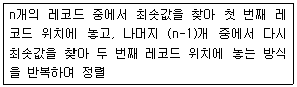
- Selection Sort
- Insertion Sort
- Bubble Sort
- Heap Sort
(정답률: 65%)

2. 뷰(View) 삭제문의 형식으로 옳은 것은?
- DELETE VIEW 뷰이름;
- DROP VIEW 뷰이름;
- REMOVE VIEW 뷰이름;
- OUT VIEW 뷰이름;
(정답률: 85%)
3. 제1정규형에서 제2정규형 수행 시 작업으로 옳은 것은?
- 이행적 함수 종속성 제거
- 다치 종속 제거
- 모든 결정자가 후보 키가 되도록 분해
- 부분 함수 종속성 제거
(정답률: 75%)
4. 시스템 카탈로그에 대한 설명으로 틀린 것은?
- 데이터베이스 시스템에 따라 상이한 구조를 가진다.
- 사용자도 SQL을 이용하여 검색할 수 있다.
- 데이터베이스에 대한 통계정보가 저장될 수 있다.
- 사용자 데이터베이스이다.
(정답률: 61%)
5. 해싱함수 기법 중 주어진 모든 키 값을 이루는 숫자의 분포를 분석하여 비교적 고른 분포를 보이는 자릿수들을 필요한 만큼 선택해서 홈 주소로 사용하는 방식은?
- 재산법(Division method)
- 폴딩법(Foldion method)
- 기수 변환법(Radix conversion method)
- 계수 분석법(Digit analysis method)
(정답률: 53%)
6. 관계 대수에서 JOIN 연산자 기호에 해당하는 것은?
- ÷
- ⋈
- π
- ∩
(정답률: 78%)
7. 다음 이진트리를 후위(Postorder) 운행한 결과로 옳은 것은?
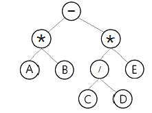
- A*B-C/D*E
- -*AB*/CDE
- AB*CDE/*-
- AB*CD/E*-
(정답률: 75%)
8. 관계형 데이터베이스에서 사용되는 키(key)에 대한 설명으로 틀린 것은?
- 후보키 : 개체들을 고유하게 식별할 수 있는 속성
- 슈퍼키 : 릴레이션을 구성하는 속성들 중에서 각 튜플을 유일하게 식별하기 위해 사용되는 하나 이상의 속성들의 집합
- 외래키 : 참조하는 릴레이션에서 기본키로 사용되는 속성
- 보조키 : 후보키 중에서 대표로 선정된 키
(정답률: 67%)
9. 릴레이션에 존재하는 튜플의 개수를 의미하는 것은?
- cardinality
- degree
- domain
- attribute
(정답률: 76%)
10. 뷰(View)에 대한 설명으로 틀린 것은?
- DBA는 보안 측면에서 뷰를 활용할 수 있다.
- 데이터의 논리적 독립성을 제공한다.
- 뷰를 이용한 또 다른 뷰를 생성할 수 있다.
- 삽입, 삭제, 갱신 연산에 아무런 제한이 없으므로 사용자가 뷰를 다루기가 용이하다.
(정답률: 76%)
11. 다음 인접 행렬(Adjacency Matrix)에 대응되는 그래프(Graph)를 그렸을 때, 옳은 것은?
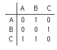
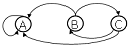
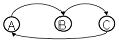
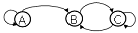

(정답률: 81%)
12. This is a linear list for which all insertions and deletions, and usually all accesses, are made at one and of the list. What is this?
- queue
- stack
- graph
- tree
(정답률: 63%)
13. 아래 SQL문에서 WHERE 절의 조건이 의미하는 것은?
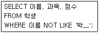
- ‘박’으로 시작하는 모든 문자 이름을 검색한다.
- ‘박’으로 시작하지 않는 모든 문자 이름을 검색한다.
- ‘박’으로 시작하는 3글자의 문자 이름을 검색한다.
- ‘박’으로 시작하지 않는 3글자의 문자 이름을 검색한다.
(정답률: 77%)
14. 데이터베이스 관리시스템(DBMS)의 필수 기능이 아닌 것은?
- 데이터베이스 정의 기능
- 데이터베이스 종속 기능
- 데이터베이스 조작 기능
- 데이터베이스 제어 기능
(정답률: 81%)
15. 버블 정렬을 이용한 오름차순 정렬 시 다음 자료에 대한 1회전 후의 결과는?
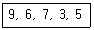
- 6, 7, 3, 5, 9
- 6, 3, 5, 7, 9
- 3, 6, 7, 9, 5
- 3, 9, 6, 7, 5
(정답률: 83%)
16. 개념 세계에서 표현된 각 개체와 개체 간의 관계들을 서로 독립된 2차원 테이블 즉 릴레이션으로 표현하며, 가장 널리 사용되는 데이터 모델은?
- 개체형 데이터 모델
- 관계형 데이터 모델
- 계층형 데이터 모델
- 네트워크형 데이터 모델
(정답률: 64%)
17. 다음의 설명에서 ( )의 내용으로 옳은 것은?
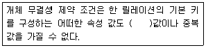
- NULL
- TUPLE
- DOMAIN
- ENTITY
(정답률: 87%)
18. 관계해석에 대한 설명으로 거리가 먼 것은?
- 원하는 정보와 그 정보를 어떻게 유도하는가를 기술하는 절차적인 언어이다.
- 기본적으로 관계해석과 관계대수는 관계 데이터베이스를 처리하는 기능과 능력면에서 동등하다.
- 튜플 관계해석과 도메인 관계해석이 있다.
- 프레디카트 해석(predicate calculus)에 기반을 두고 있다.
(정답률: 70%)
19. 다음 그림에 해당하는 선형 자료 구조는? (단, 삽입과 삭제가 리스트의 양쪽 끝에서 모두 발생)
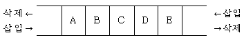
- Deque
- Stack
- Queue
- Graph
(정답률: 64%)
20. 학생(STUDENT) 테이블에서 어떤 학과(DEPT)들이 있는지 검색하는 SQL명령은? (단, 결과는 중복된 데이터가 없도록 한다.)
- SELECT ONLY * FROM STUDENT;
- SELECT DISTINCT DEPT FROM STUDENT;
- SELECT ONLY DEPT FROM STUDENT;
- SELECT NOT DUPLICATE DEPT FROM STUDENT;
(정답률: 83%)
2과목: 전자 계산기 구조
21. 메모리 인터리빙(interleaving)의 사용 목적으로 가장 적합한 것은?
- 메모리 액세스의 효율 증대
- 기억 용량의 증대
- 입출력 장치의 증설
- 전력 소모 감소
(정답률: 74%)
22. 메인 메모리의 용량이 1024K*24bit 일 때 MAR과 MBR 길이는 각각 몇 비료인가?
- MAR=20, MBR=20
- MAR=20, MBR=24
- MAR=24, MBR=20
- MAR=24, MBR=24
(정답률: 72%)
23. 문자의 위치 변환에 이용하는데 가장 효율적인 동작은?
- 로테이트(rotate) 동작
- 산술 시프트(shift) 동작
- 논리 시프트 동작
- 좌측 및 우측 시프트 동작
(정답률: 58%)
24. 다음 중 컴퓨터의 데이터 처리속도 성능을 표시하는 가장 중요한 요소는?
- assembler
- compiler
- program
- bandwidth
(정답률: 61%)
25. hardwired control 방법으로 제어장치를 구현할 때 설명이 잘못된 것은?
- 논리 회로 설계기법에 의해서 제어신호를 생성하는 방법이다.
- RISC 구조를 기본적으로 하는 컴퓨터에서 주로 많이 사용된다.
- 동작속도를 빠르게 할 수 있다.
- instruction set를 갱신(update)하기가 용이하다.
(정답률: 49%)
26. 세그먼트-페이징(segment-paging) 기법을 이용하는 가상 메모리(virtual memory) 시스템에서 논리 주소 형식(logical address format)이 다음과 같다면 총 주소 공간의 크기는?
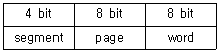
- 28word
- 212word
- 216word
- 220word
(정답률: 56%)
27. CPU의 명령어 사이클(instruction cycle) 4단계에 해당되지 않는 것은?
- fetch cycle
- control cycle
- indirect cycle
- execute cycle
(정답률: 62%)
28. OP 코드가 5비트, Operand가 11비트인 명령어가 갖는 최대 마이크로 연산의 종류는?
- 5개
- 32개
- 64개
- 2048개
(정답률: 51%)
29. JK 플립플롭에서 Ja=0, Ko=0 인 경우의 출력Qn+1은?(오류 신고가 접수된 문제입니다. 반드시 정답과 해설을 확인하시기 바랍니다.)
- 0
- 1
- Qa
- 부정
(정답률: 50%)
30. 다음 마이크로 동작 중 종류가 다른 것은?
- 논리 시프트
- 순환 시프트
- 보수
- 산술연산
(정답률: 62%)
31. CPU가 명령어를 수행하는데 필요한 동작이 아닌 것은?
- buffer
- fetch
- decode
- execute
(정답률: 51%)
32. 여러 대의 고속 입출력 장치가 동시에 하나의 채널을 공유하고 데이터를 전송할 수 있는 채널 방식은?
- 바이트 다중 방식
- 버스트 방식
- 입출력 선택 채널 방식
- 입출력 블록 다중 채널 방식
(정답률: 67%)
33. 두 개의 독립적인 장치 사이의 비동기적인 데이터 전송을 이루기 위하여 데이터가 전송될 시각을 알릴 때 두 장치 사이에 교환되는 제어 신호는?
- 스타트(start)신호
- DMA 제어신호
- 입터립트 요구신호
- 스트로브(strobe)신호
(정답률: 42%)
34. 다음과 같은 명령 형식을 사용하는 컴퓨터에서 가능한 MRI(Memory Reference Instruction)의 개수는?
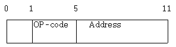
- 4
- 8
- 16
- 32
(정답률: 54%)
35. CPU의 제어장치 구성으로 옳은 것은?
- 누산기, 명령해독기, 신호발생기
- 누산기, 플래그레지스터, 신호발생기
- 명령레지스터, 입출력해독기, 인터페이스
- 명령레지스터, 명령해독기, 신호발생기
(정답률: 55%)
36. 다음 중 데이터 레지스터에 속하지 않는 것은?
- Stack
- Accumulator
- Program Counter
- General Purose Register
(정답률: 48%)
37.
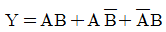
를 가장 간략화 한 것은?- AB
- A+B
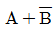
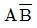
(정답률: 55%)
38. 입출력장치와 주기억장치를 연결하는 중개역할을 담당하는 것은?
- 버스(Bus)
- 버퍼(Buffer)
- 채널(Channel)
- 콘솔(Console)
(정답률: 72%)
39. 보조기억장치 중 접근(access) 특성이 다른 것은?
- Magnetic Tape
- Magnetic Disk
- USB 메모리
- Magnetic Drum
(정답률: 53%)
40. 컴퓨터 시스템에서 인터럽트의 우선순위 중 가장 높은 우선순위를 가지는 것은?
- 오버레이터 인터럽트
- 정전 혹은 기계적인 고장
- 입출력 장치의 인터럽트
- 프로그램 연산자나 주소 지정 방식의 오류
(정답률: 72%)
3과목: 시스템분석설계
41. 코드의 기능 중 다음이 설명하는 것은?
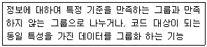
- 표준화 기능
- 분류 기능
- 식별 기능
- 연산 기능
(정답률: 74%)
42. 체크 시스템에서 계산 처리 단계에서의 오류검사 방법이 아닌 것은?
- 중복 레코드(double record) 검사
- 숫자(numeric) 검사
- 오버플로우(overflow) 검사
- 불능, 부정 검사
(정답률: 43%)
43. S/W개발 과정에서 가장 먼저 해야 할 일은?
- 프로그램 코딩
- 프로그램 구현
- 요구사항의 분석
- 유지보수
(정답률: 79%)
44. 시스템 개발 단계 중 가장 마지막 단계에 수행하는 것은?
- 테스트와 디버깅
- 업무분석과 요구정의
- 프로그래밍
- 프로그램 설계
(정답률: 79%)
45. 입력 설계 순서로 옳은 것은?
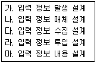
- 가 → 나 → 다 → 라 → 마
- 가 → 다 → 나 → 라 → 마
- 가 → 라 → 나 → 마 → 다
- 가 → 나 → 라 → 마 → 다
(정답률: 63%)
46. 체크 시스템 중 입력 정보의 여러 데이터가 특정 항목의 합계와 같다는 사실을 인지할 때 컴퓨터를 이용하여 계산한 결과와 일치여부를 체크하는 방법은?
- Matching Check
- Format Check
- Balance Check
- Check Digit Check
(정답률: 42%)
47. 마스터 파일 내의 데이터를 트렌잭션 파일로 추가, 정정, 삭제하여 항상 최근의 정보를 갖도록 하는 것은?
- 정렬(sort)
- 갱신(update)
- 병합(merge)
- 대조(matching)
(정답률: 80%)
48. 구조적 분석의 주요 도구인 DFD(Data Flow Diagram)의 구성요소가 아닌 것은?
- 처리
- 제어
- 자료 저장소
- 자료의 시작과 끝
(정답률: 35%)
49. HIPO는 시스템과 프로그램을 기능별로 어떤형식으로 나타내는 기법인가?
- bottom-up
- top-down
- recursive
- dynamic
(정답률: 61%)
50. 코드(code) 설계 시 유의사항이 아닌 것은?
- 컴퓨터 처리에 적합하여야 한다.
- 공통성이 있어야 한다.
- 다양성이 있어야 한다.
- 확장성이 있어야 한다.
(정답률: 65%)
51. 객체지향 설계의 기본 원칙이 아닌 것은?
- 자료 추상화
- 캡슐화
- 자료와 행위의 결합
- 절차화
(정답률: 47%)
52. 입출력의 표준화에 포함되지 않는 사항은?
- 방식의 표준화
- 매체의 표준화
- 형식의 표준화
- 운영체제의 표준화
(정답률: 64%)
53. 문서화(Documentation)의 목적에 대한 설명으로 거리가 먼 것은?
- 시스템 개발 중 추가 변경에 따른 혼란방지
- 시스템의 개발 요령과 순서를 표준화하여 보다 효율적인 작업 도모
- 개발 후 시스템 유지 보수의 용이
- 시스템 개발 과정의 요식 행위화
(정답률: 76%)
54. 파일설계 단계 중 다음 사항에 해당하는 것은?
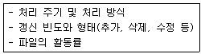
- 파일 항목 검토
- 파일 특성 조사
- 파일 매체 검토
- 파일 편성법 검토
(정답률: 62%)
55. 파일 편성 중 랜덤 편성에 대한 설명으로 틀린 것은?
- 특정 레코드 접근이 직접 가능하다.
- 대화형 처리에 적합하다.
- 주소 계산 방법에는 직접 주소법, 디렉토리 조사법, 해싱 함수 이용법 등이 있다.
- 충돌 발생의 염려가 없으므로 예비 기억공간의 확보가 필요 없다.
(정답률: 72%)
56. 프로세스 설계 순서가 가장 올바른 것은?
- 처리방식 → 운용절차 → 논리 → 작업
- 작업 → 논리 → 처리방식 → 운용절차
- 논리 → 작업 → 운용절차 → 처리방식
- 처리방식 → 작업 → 논리 → 운용절차
(정답률: 38%)
57. MTTR과 MTBF 두 가지 척도를 사용하여 신뢰도를 구하는 식을 옳게 나타낸 것은?
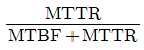
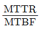
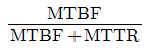
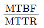
(정답률: 55%)
58. 출력 설계 단계 중 출력 정보 분배에 대한 설계 시 고려사항으로 거리가 먼 것은?
- 분배 책임자
- 분배의 방법 및 형태
- 분배의 주기 및 시기
- 분배 항목 명칭
(정답률: 42%)
59. 시스템 개발 단계 중 시스템 설계 단계에서 요구되는 사항으로 가장 거리가 먼 것은?
- 기능 분석 방법에 대한 설계를 한다.
- 코드 체계에 대한 설계를 한다.
- 각 모듈의 논리적인 처리 절차를 설계한다.
- 파일의 구체적인 사양을 설계한다.
(정답률: 27%)
60. 표준 처리 패턴 중 파일 내의 데이터와 대조 파일에 있는 데이터 중 동일한 것들만 골라서 파일을 만드는 것은?
- Collate
- Extract
- Distribution
- Generate
(정답률: 51%)
4과목: 운영체제
61. 디스크 할당기법 중 연속 할당 기법에 관한 설명으로 틀린 것은?
- 외부단편이 발생한다.
- 논리적으로 연속된 레코드들이 물리적으로 인접하여 저장되므로 엑세스 시간이 길어진다.
- 파일의 디렉토리를 구현하기가 수월하다.
- 새 파일 생성 시 그 파일크기보다 큰 연속된 기억 공간이 없으면 파일을 생성할 수 없다.
(정답률: 40%)
62. 기억장치 관리정책에서 CPU에 의해 실행되거나 참조되기 위해서 주기억장치로 적재할 프로그램이나 자료를 언제 가져 올 것인가를 결정하는 정책은?
- 교체정책(replacement strategic)
- 할당정책(assignment strategic)
- 반입정책(fetch strategic)
- 배치정책(placement strategic)
(정답률: 62%)
63. 병렬처리의 주종(master/slave) 시스템에 대한 설명으로 틀린 것은?
- 주프로세서는 연산만 수행하고 종프로세서는 입출력과 연산을 수행한다.
- 주프로세서만이 운영체제를 수행한다.
- 하나의 주프로세서와 나머지 종프로세서로 구성된다.
- 주프로세서의 고장 시 전체 시스템이 멈춘다.
(정답률: 70%)
64. 우선순위 스케줄링에 대한 설명으로 틀린 것은?
- 우선순위의 동급은 내부적 요인과 외부적 요인에 따라 부여할 수 있다.
- 각 작업마다 우선수위가 주어지며, 우선순위가 제일 높은 작업에게 먼저 프로세서가 할당된다.
- 기아 상태(Starvation)가 발생할 수 있다.
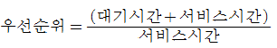
이다.
(정답률: 48%)
65. 스케줄링에 대한 설명으로 틀린 것은?
- 무한 연기는 회피해야 한다.
- 단위시간당 처리량을 극대화해야 한다.
- 모든 프로세스에게 공정한 적용을 위해 우선순위는 불필요하다.
- 오버헤드를 최소화시켜야 한다.
(정답률: 73%)
66. 병행중인 프로세서들 간에 공유 변수를 엑세스하고 있는 하나의 프로세스 이외에는 다른 모든 프로세스들이 공유 변수를 엑세스하지 못하도록 제어하는 기법을 무엇이라 하는가?
- 상호보완
- 상호배제
- 접근제한
- 교착상태
(정답률: 63%)
67. 13K의 작업을 두 번째 공백인 14K의 작업공간에 할당했을 경우, 사용된 기억장치 배치전략 기법은?
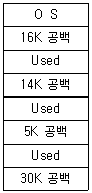
- first-fit
- best-fit
- worst-fit
- last-fit
(정답률: 76%)
68. 교착상태 해결 방법 중 점유 및 대기, 비선점, 환행대기와 가장 관계있는 것은?
- Avoidance
- Detection
- Prevention
- Recovery
(정답률: 58%)
69. 병행 프로세스들의 고려 사항이 아닌 것은?
- 공유자원을 상호 배타적으로 사용해야 한다.
- 병행 프로세스들 사이에는 협력 또는 동기화가 이루어져야 한다.
- 병행 프로세스들은 프로그래머가 외부적으로 스케줄링할 수 없도록 한다.
- 교착상태를 해결해야 하며 병행 프로세스들의 병렬 처리도를 극대화해야 한다.
(정답률: 61%)
70. UNIX 파일 시스템에서 inode에 포함되는 내용이 아닌 것은?
- 파일 소유자의 사용자 식별
- 파일의 크기
- 파일이 사용된 시간대별 내역
- 파일의 내용이 담긴 디스크상의 실제 주소
(정답률: 54%)
71. 프로세스 관리 중에서 스케줄링의 기준에 해당하지 않는 것은?
- 프로세서 중심 프로세스
- 메모리 중심 프로세스
- 대화식 프로세스
- 배치 프로세스
(정답률: 35%)
72. 자원보호 기법 중 접근 제어 행렬을 구성하는 요소가 아닌 것은?
- 영역
- 객체
- 권한
- 시간
(정답률: 58%)
73. 운영체제에 관한 설명으로 틀린 것은?
- 운영체제는 고급 언어로 작성된 프로그램을 컴파일하여 기계어로 만들어준다.
- 운영체제는 사용자와 컴퓨터 시스템 간의 인터페이스 기능을 제공한다.
- 운영체제는 CPU, 기억장치, 파일, 입출력장치 등의 자원을 관리한다.
- 운영체제는 사용자가 쉽게 하드웨어에 접근할 수 있도록 한다.
(정답률: 65%)
74. 시분할 시스템(time sharing system)에 대한 설명으로 틀린 것은?
- 다중 프로그램명의 논리적 확장이다.
- 사용자와 시스템 간에 직접적인 통신을 제공한다.
- 동시에 많은 사용자가 컴퓨터를 공유할 수 있다.
- 시스템의 효율을 위하여 작업량을 일정 수준 모아두었다가 한꺼번에 처리한다.
(정답률: 69%)
75. 기억장치계층구조에서 가장 속도가 빠른 것은?
- DRAM
- Register
- Hard Disk Drive
- Solid State Drive
(정답률: 75%)
76. 가상기억장치 시스템에서 가상 페이지 주소를 사용하여 데이터를 접근하는 프로그램이 실행될 때, 프로그램에서 접근하려고 하는 페이지가 주기억장치에 존재하지 않은 경우 발생하는 현상은?
- page fault
- context switching
- mutual exclosion
- overlay
(정답률: 71%)
77. 분산처리시스템의 설계 목적으로 틀린 것은?
- 자원과 데이터의 공유성
- 보안의 용이성
- 확장의 용이성
- 연산속도 향상
(정답률: 72%)
78. UNIX의 쉘(Shell)에 대한 설명으로 틀린 것은?
- 사용자와 커널 사이에서 중계자 역할을 한다.
- 스케줄링, 기억장치 관리, 파일 관리, 시스템호출 인터페이스 등의 기능을 제공한다.
- 여러 가지의 내장 명령어를 가지고 있다.
- 사용자 명령의 입력을 받아 시스템 기능을 수행하는 명령어 해석기이다.
(정답률: 56%)
79. 파일시스템의 기능으로 가장 거리가 먼 것은?
- 사용자가 물리적 이름을 사용하는 대신에 기호형 이름을 사용하여 자신의 파일을 참조할 수 있도록 장치 독립성을 제공한다.
- 사용자의 데이터에 대해 수행될 수 있는 작업에 대한 물리적 구조를 제공한다.
- 사고로 인한 정보손실, 고의적 파괴를 방지하기 위한 백업과 복구 능력을 갖추어야 한다.
- 정보보호를 위해 데이터를 암호화하고 해독할 수 있는 능력을 갖추어야 한다.
(정답률: 39%)
80. 보안을 유지하기 위한 암호화 방법에 해당되지 않는 것은?
- DES
- RSA
- Public key system
- Capability list
(정답률: 54%)
5과목: 정보통신개론
81. X.25 프로토콜의 패킷계층에서 하나의 전송링크를 통하여 여러개의 논리적 연결을 제공하는 기능은?
- 흐름제어
- 에러제어
- 다중화
- 리셋과 리스타트
(정답률: 61%)
82. 샤논의 채널 용량 공식을 사용해서 주어진 채널의 데이터 전손율을 계산할 때, C=B이면 무엇을 의미하는가? (단, C : 통신용량, B : 대역폭 )
- 신호가 잡음보다 약하다.
- 신호가 잡음보다 강하다.
- 신호와 잡음이 같다.
- 이 채널로는 데이터 전송이 불가능하다.
(정답률: 66%)
83. 8진 PSK의 오류 확률은 2진 PSK 오류 확률의 몇 배인가?
- 3
- 6
- 9
- 12
(정답률: 68%)
84. 대역폭이 4kHz인 음성신호를 PCM 형태의 디지털신호로 변환하여 전송할 경우 신호의 전송속도(kbps)는? (단, 양자화 레벨은 8비트)
- 4
- 8
- 32
- 64
(정답률: 26%)
85. 이동통신망에서 통화 중인 이동국이 현재의 셀에서 벗어나 다른 셀로 진입하는 경우, 셀이 바뀌어도 중단 없이 통화를 계속할 수 있게 해주는 것은?
- 핸드오프(hand off)
- 다이버시티(diversity)
- 셀 분할(cell splitting)
- 로밍(roaming)
(정답률: 59%)
86. 발광다이오드(LED)에서 나오는 빛의 파장을 이용해 광대역 통신망보다 빠른 통신 속도를 구현하는 기술은?
- LAN
- MCC
- Li-Fi
- SAA
(정답률: 69%)
87. HDLC 전송프레임에서 시작 플래그 다음으로 전송되는 필드는?
- 제어부
- 주소부
- 정보부
- FCS
(정답률: 64%)
88. 다중화 기법 중 FDM방식에서 신호들이 전기적 중복 현상을 예방하기 위해서 인접하는 sub-channel들 사이에 위치하는 것은?
- Terminal
- Frequency band
- Guard band
- Polling
(정답률: 55%)
89. OSI-7 계층의 네트워크계층에서 사용하는 기본 데이터 단위는?
- 세그먼트
- 패킷
- 워드
- 레코드
(정답률: 65%)
90. 패킷 교환 방식에 대한 설명으로 틀린 것은?
- 대화형 데이터 통신에 적합하도록 개발된 교환 방식이다.
- 패킷 교환은 저장-전달 방식을 사용한다.
- 데이터 그램과 가상 회선 방식으로 구분된다.
- 데이터 그램 방식은 패킷이 전송되기 전에 가상회선 연결 설정이 이루어져야 한다.
(정답률: 50%)
91. 에러가 발생되지 않는 이상적인 통신로(무잡음 이산 채널)의 채널 용량은? (단, C : 채널용량, n개의 기호들은 동일 확률을 가지고 있다.)
- C=log2(n-2)
- C=log2n
- C=(n-1)log2
- C=log21/n
(정답률: 57%)
92. PSK에서 반송파간의 위상차는? (단, M은 진수이다)
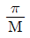
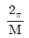
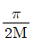
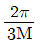
(정답률: 56%)
93. 64진 QAM의 대역폭 효율은 몇 bps/Hz인가?
- 2
- 5
- 6
- 7
(정답률: 64%)
94. 광섬유 케이블은 빛의 어떤 현상을 이용하는 것인가?
- 산란
- 직진
- 전반사
- 굴절
(정답률: 69%)
95. 펄스코드 변조방식(PCM)의 송신측 변조과정은?
- 입력신호 → 부호화 → 양자화 → 표본화
- 입력신호 → 양자화 → 표본화 → 부호화
- 입력신호 → 표본화 → 양자화 → 부호화
- 입력신호 → 부호화 → 표본화 → 양자화
(정답률: 69%)
96. 수신측에 두 개 이상의 안테나를 설치했을 때 이들 안테나에서 동시에 다중경로 페이딩이 발생하지 않는다는 원리를 이용해 페이딩을 방지하는 다이버시티 기술은?
- 공간 다이버시티
- 시간 다이버시티
- 지연 다이버시티
- 측파 다이버시티
(정답률: 54%)
97. OSI참조모델의 응용계층에 해당하는 프로토콜이 아닌 것은?
- HTTP
- SMTP
- FTP
- ICMP
(정답률: 48%)
98. 수신단에서 패리티 체크(parity check)를 하는 주된 목적은?
- 기억 장치의 용량 검사
- 전송된 부호의 오류 검사
- 전송된 데이터의 용량 검사
- 검출된 오류를 정정
(정답률: 62%)
99. 공중데이터 네트워크에서 패킷형 터미널을 위한 DTE와 DCE간의 접속규격을 나타내는 ITU-T 권고안은?
- V.23
- V.25
- Z.24
- X.25
(정답률: 69%)
100. HDLC 전송제어에서 사용하는 동작 모드가 아닌 것은?
- 정규응답모드(NRM)
- 초기모드(IM)
- 비동기 평형모드(ABM)
- 비동기 응답모드(ARM)
(정답률: 58%)